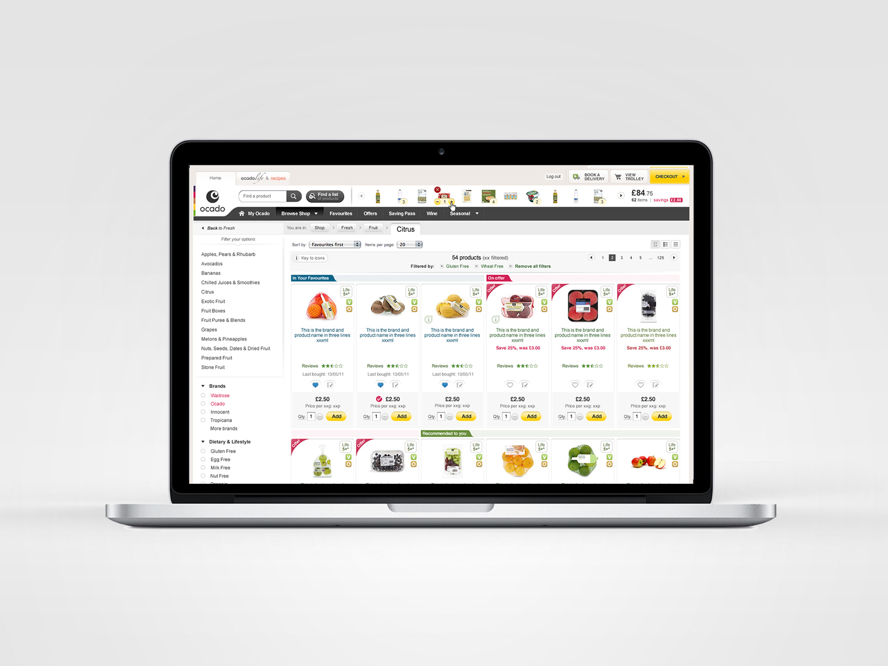
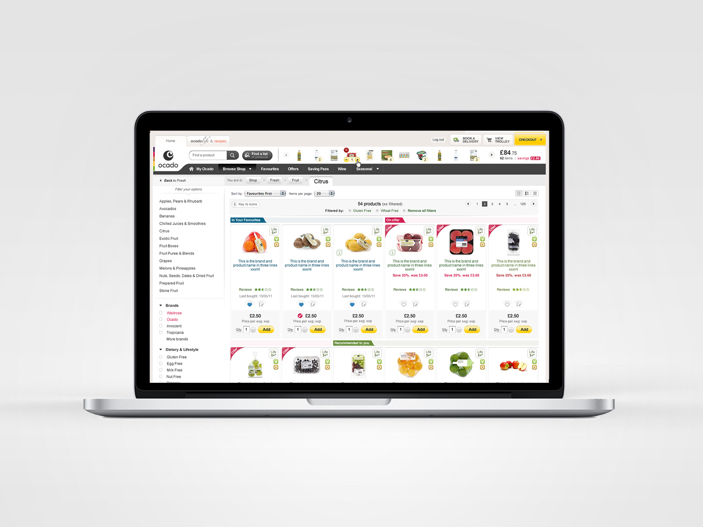

My story
I was freelancing in Italy when I was invited to have a phone interview with Ocado. Ocado who? I asked myself. I did some research, and my heart started hammering when I read about Ocado's vision was to disrupt the online shopping for grocery.
In Ocado, I joined a young growing team made by designers and front-end developers. With the support of the Head of UX, I was able to revamp some user experience patterns as well as most of the UI design of the under-construction webshop to make it as user-friendly and visually appealing as I could.
In partnership with the retail team, headed up by a visionary Head, with instinct and madness, we broke apart and reinvented any user-centred design process; we defined what the user experience for grocery in the UK would be for years to come.
The madness (sarcastically) continued when six months later we decided to rebrand Ocado entirely. Pure adventure for a passionate designer as myself. I welcomed the madness because it gave us the chance to fix many UX and design issues that, in the meantime, we learnt from our users.
Before the new work started, I was promoted to Manager. Together with Cantara, a talented young designer which I hired, we started redesigning ocado.com and the award-winning IOS apps with the new branding.
We released the new ocado.com and IOS apps in 2012, and most that work is still (early 2018) proudly standing regardless of the many well visible design issues.
Soon after the release, I considered my work done. Luckily, a new adventure was waiting for me. I moved to the new General Merchandise department to design and lead the UX efforts for the new Ocado's specialised shops.